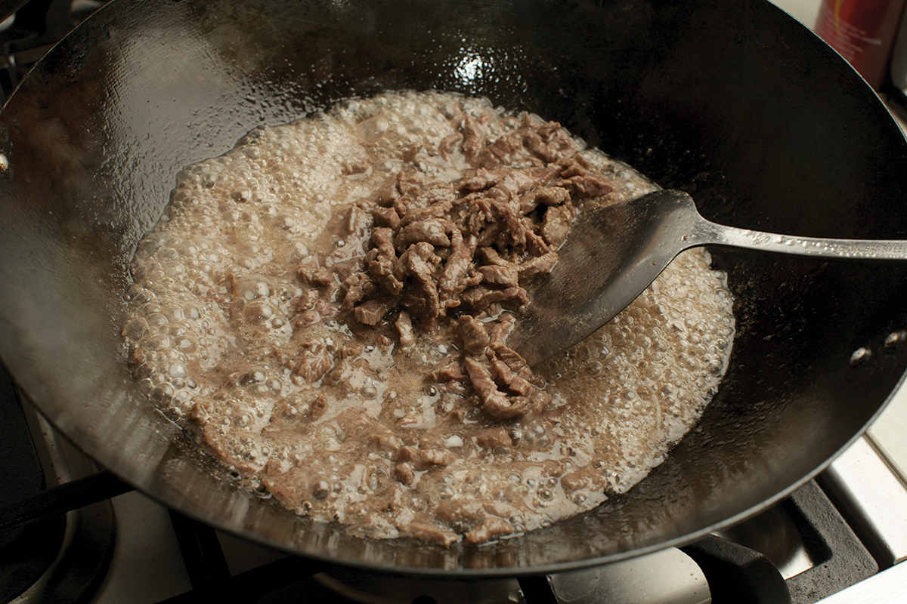
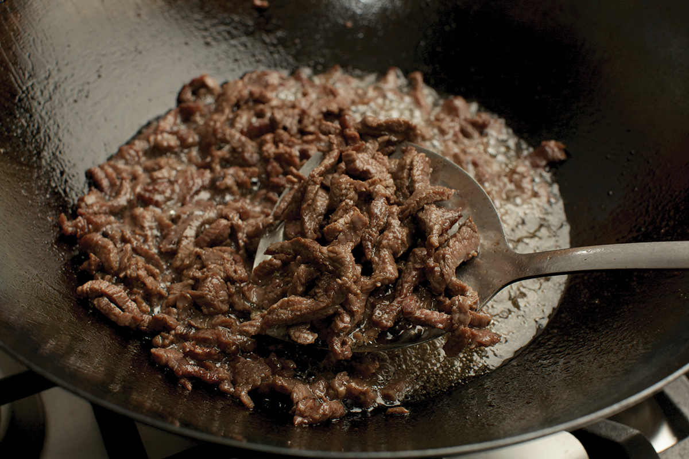
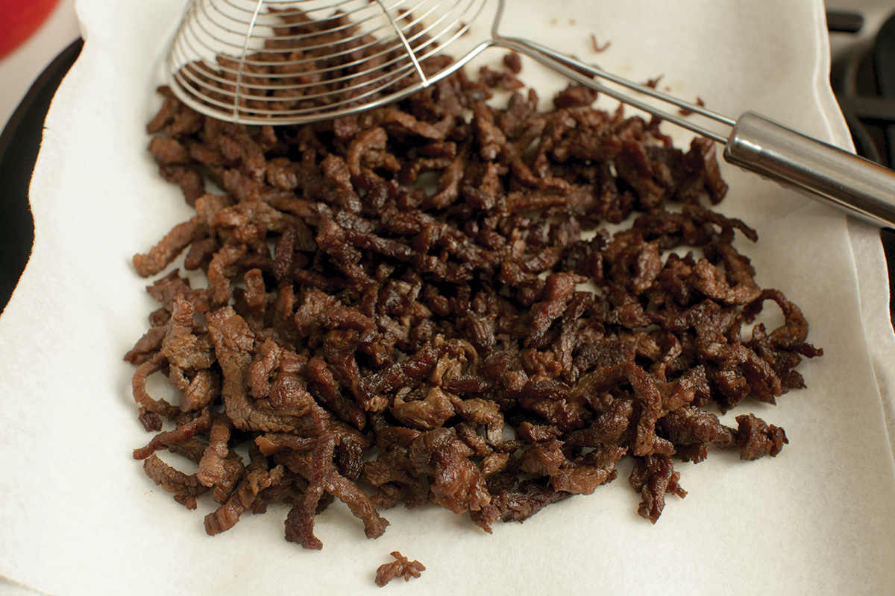
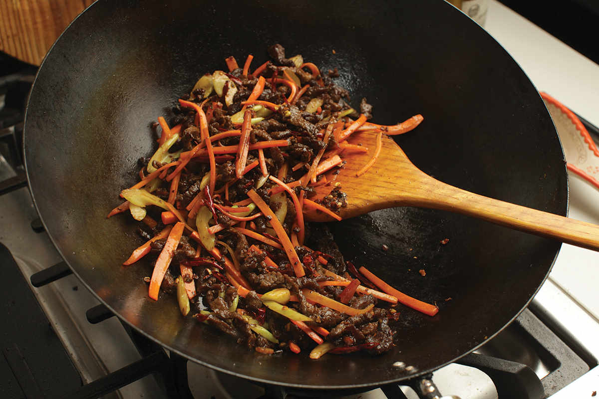
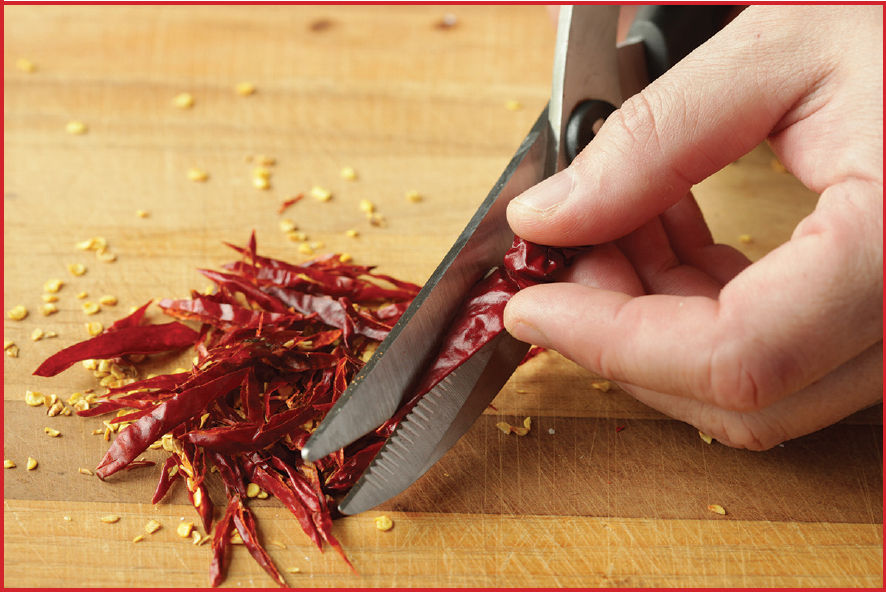
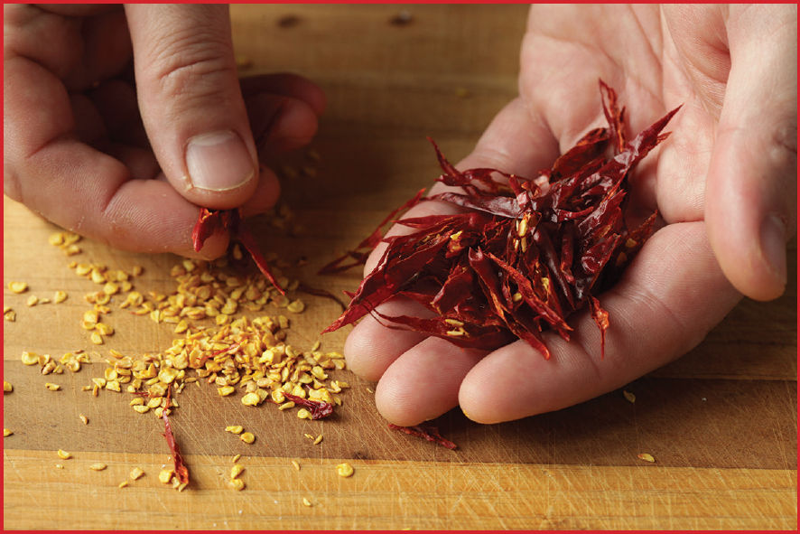

|
Yield Serves 3 to 4 |
Active Time 30 minutes Total Time 45 minutes |
The shredded dried chiles make this dish pretty hot. You can omit them or cut back on them to make a milder version. The strained oil can be cooled, then stored in a sealed container in the fridge for another use. Chinese celery and carrots are typical vegetables in this dish, but slivered bell peppers would work instead of or in addition to them.
INGREDIENTS
1 pound (450 g) flank steak, cut into fine matchsticks (see here)
1 cup (240 ml) peanut, rice bran, or other neutral oil
2 teaspoons (5 g) minced garlic (about 2 medium cloves)
2 teaspoons (5 g) minced fresh ginger (about ½-inch segment)
2 tablespoons fermented chile bean paste (doubanjiang)
6 dried hot chiles, such as er jing tiao or árbol, seeded and cut into fine shreds with kitchen shears (see Notes)
½ teaspoon (2 g) ground Sichuan peppercorns
2 Chinese or regular celery stalks, cut on a sharp bias into ¼ -inch slices
1 medium carrot (about 6 ounces/170 g), cut into fine matchsticks (see here)
1 tablespoon (15 ml) soy sauce
1 tablespoon (15 ml) Chinkiang or black vinegar
1 tablespoon (15 ml) Shaoxing wine
2 teaspoons (8 g) sugar
Kosher salt
DIRECTIONS
1 Line a large plate with a double layer of paper towels. Combine the steak and oil in wok and cook over medium-high heat, stirring occasionally. The beef will initially give off lots of moisture and eventually begin sizzling and frying. The beef is done when deep brown, crisp at the edges, but still pliant, about 10 minutes. Remove from the oil with a slotted spoon, drain on the paper-towel-lined plate, and transfer to a medium bowl.
2 Carefully pour the hot oil out of the wok through a fine-mesh strainer set in a heatproof container (such as a large saucepan).
3 Wipe out the wok and heat over high heat until smoking. Reduce the heat to medium-high, add 2 tablespoons (30 ml) of the strained oil, and swirl to coat. Immediately add the garlic, ginger, and chile bean paste and stir-fry until the oil turns red, about 30 seconds.
4 Increase the heat to high. Add the hot chiles, Sichuan peppercorns, drained beef, celery, and carrots and stir-fry until the celery and carrots are tender-crisp, about 1 minute.
5 Add the soy sauce, vinegar, and wine by swirling it around the edges of the wok. Add the sugar. Toss everything together and stir-fry until there is no liquid remaining in the wok and the beef is coated in a layer of sizzling spices, about 1 minute longer. Season with salt (it may not need any) to taste. Transfer to a serving platter and serve.




How to Shred Dry Chiles

You can buy preshredded small hot chiles for dishes like Sichuan Dry-Fried Beef at a Chinese supermarket, but it’s easy enough to do with a pair of sharp kitchen shears. Hold each chile by the stem end, then snip them at a very sharp bias as thin as your scissors allow. Don’t worry about the seeds for now.

As you finish with each chile, discard the stem ends. Once all your chiles are snipped, shake the pile of shredded chiles with your fingertips and most of the seeds should fall right out. Transfer the shredded chiles to a sealable container and discard the seeds left on the cutting board. (A few seeds might hitch a ride with the shredded chiles. This is fine.)